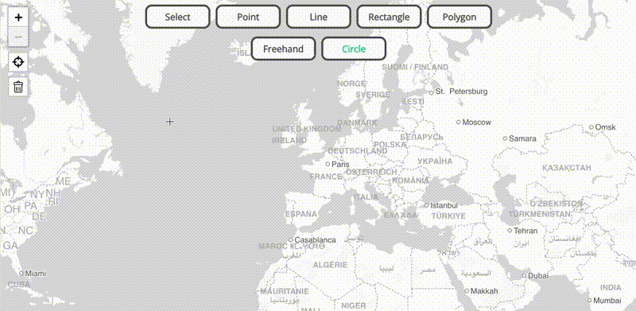

terra-draw-monorepo


Frictionless map drawing across mapping libraries.
Terra Draw centralizes map drawing logic and provides a host of out-of-the-box drawing modes that work across different JavaScript mapping libraries. It also allows you to bring your own modes!

Library Support
Terra Draw uses the concept of 'adapters' to allow it to work with a host of different mapping libraries. Built-in adapters are currently exposed as different packages in this monorepo; you can find out more in the adapters guide. The currently supported libraries are:
| Library | Version supported | npm package |
|---|---|---|
| Leaflet | v1 | terra-draw-leaflet-adapter |
| OpenLayers | v10 | terra-draw-openlayers-adapter |
| MapLibre GL JS | v3 | terra-draw-maplibre-gl-adapter |
| Google Maps JS API | v8 | terra-draw-google-maps-adapter |
| Mapbox GL JS | v3 | terra-draw-mapbox-gl-adapter |
| ArcGIS JavaScript SDK | v4 | terra-draw-arcgis-adapter |
Getting Started
Please see the the getting started guide - this provides a host of information on how to get up and running with Terra Draw.
Development & Contributing
- For development, please see the the development documentation
- For guidance on contributing, please see the the contributing documentation
Project Website
You can check out the official Terra Draw website at terradraw.io. If you are interested in contributing to the website please see this repository.
Contact
Email: contact@terradraw.io
License
MIT